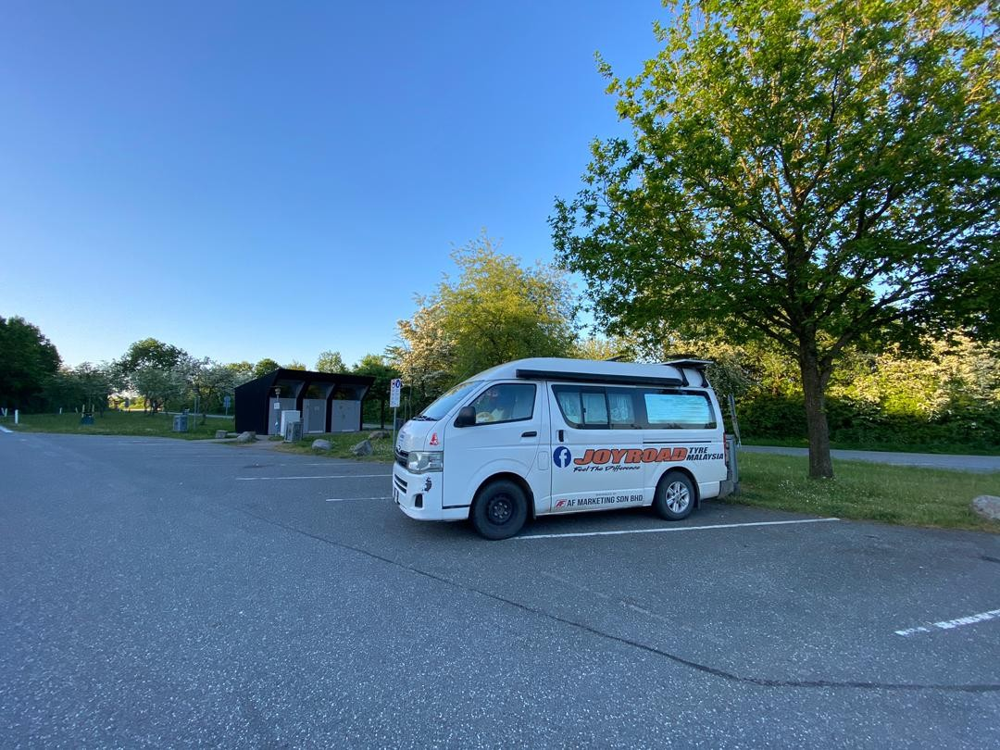

Real Story · 中文
18/5 overnight at Rasteplads Årslev Vest.
18 May 2024，离开 Iceland 回到 Denmark 后， 我 overnight at Rasteplads Årslev Vest。
这不是第一次来到 Denmark。 但这一次的感觉不同： 上一次是准备去 Iceland， 这一次是从 Iceland 回来，进入第三段回程的节奏。

Morning
19/5 morning, birds are singing.
19 May morning，birds are singing。 在长途旅行里面，有些早晨不是靠景点记住， 而是靠声音记住。
从 Iceland 的风、海、雪和 ferry 回来后， Denmark 的鸟声显得特别温柔。 好像 road life 又回到陆地的呼吸。
English Memory Summary
Back on land after the Iceland loop.
On 18 May 2024, after returning from Iceland by Smyril Line, Tuzi overnighted at Rasteplads Årslev Vest in Denmark. The next morning began quietly with birds singing, marking the return from sea-crossing back into road rhythm.
Heart Statement
有些回程，是从鸟声开始的。
Denmark received Toyotaki again, not with a border drama, but with a quiet morning and birdsong.